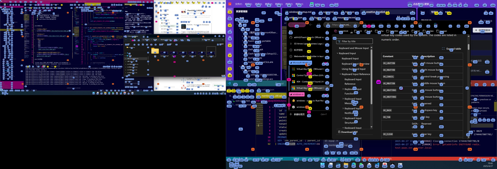

Alt / ⌥+H
整个屏幕，出现提示
在应用内按下快捷键，为界面元素和网格位置生成字母标签。
从一个按钮，到整个桌面。
唤出字母提示，输入、抵达、点击。
Screen Buoy 让你的操作思路连贯下去。
LESS REACHING. MORE DOING.
不用记住每个按钮的位置，
只需输入眼前的字母。
在应用内按下快捷键，为界面元素和网格位置生成字母标签。
输入目标的 Hint 字母，完成点击。多个窗口、多个屏幕也一样。
长按 Hint 最后一个字符进入 Hold 模式，继续右键、双击、滚动或拖拽。
ONE FLOW. EVERY WINDOW.
在编辑器、浏览器和文件管理器之间穿梭。
Hint 跟着你的工作区走。

多屏实际运行截图网格 Hint 覆盖空白区域；方向键可以进一步调整位置。
快捷键、Hint 字符、颜色和网格布局，都可以在设置中调整。
优先刷新切换、点击和 Hint 相关窗口，复用缓存，持续补充新提示。
BEYOND THE CLICK.
Hold 模式下，使用 E S D F 或 I J K L 滚动。
在目标位置进入 Hold 模式，用方向键完成拖拽。
screen-buoy.app 移到「应用程序」后打开。当前 macOS 社区版本尚未完成 Apple 公证。如果系统阻止打开，请查看下载验证与启动说明。替换应用后，可能需要重新添加权限。
运行安装程序并按指引完成安装；也可以解压便携版 ZIP，运行其中的 screen-buoy.exe。启动后系统托盘会出现图标，按 Alt + H 显示 Hint。
首次运行创建用户配置，后续升级保留现有设置。
输入 Hint 可点击目标；长按最后一个字符进入 Hold 模式后，按右 Shift 右键、Enter 双击。随时按 Esc 退出 Hint。
也可以长按 Space，直接在当前光标位置进入 Hold 模式。快捷键可以自定义。
从应用设置的「系统设置」中检查更新，下载并安装新版本。更新前会验证签名，已有个人配置会保留。
不带更新功能的旧版本，请先从本页下载并手动升级一次。也可以随时前往 GitHub Releases 下载。
不需要。Screen Buoy 是运行在本机的桌面工具，使用系统原生辅助功能接口识别界面元素。适用于浏览器及其他桌面应用；具体识别范围取决于应用是否向系统暴露可访问元素，未识别的位置可使用网格 Hint。